Category
AI Coding Guides
Tutorials, comparisons, prompt examples, and beginner workflows for coding help, debugging, code explanation, tests, and beginner programming workflows.
Best for
coding help, debugging, code explanation, tests, and beginner programming workflows.
GitHub Copilot, Cursor, Replit AI, Codeium
Use the comparison tables to decide which tool fits each job.
Library
All AI Coding articles

Best AI Coding Tools for Beginners
Learn how to choose coding assistants without getting overwhelmed with a clear workflow, examples, and beginner mistakes to avoid.
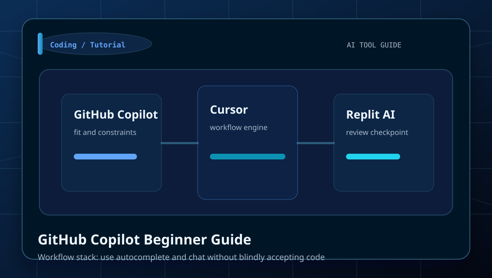
GitHub Copilot Beginner Guide
Learn how to use autocomplete and chat without blindly accepting code with a clear workflow, examples, and beginner mistakes to avoid.
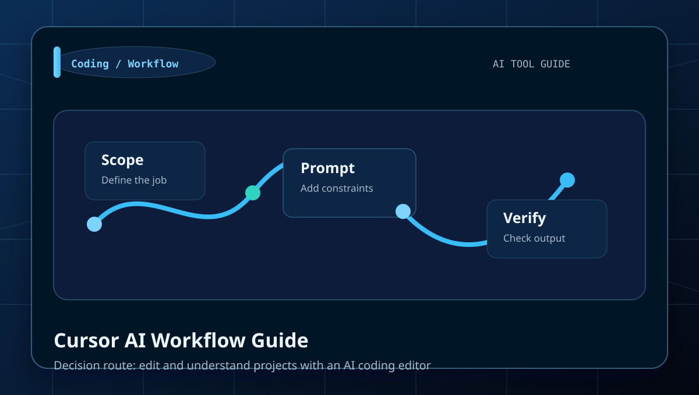
Cursor AI Workflow Guide
Learn how to edit and understand projects with an AI coding editor with a clear workflow, examples, and beginner mistakes to avoid.
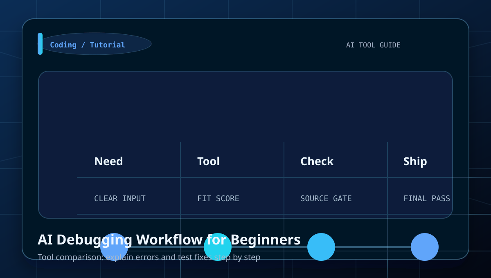
AI Debugging Workflow for Beginners
Learn how to explain errors and test fixes step by step with a clear workflow, examples, and beginner mistakes to avoid.
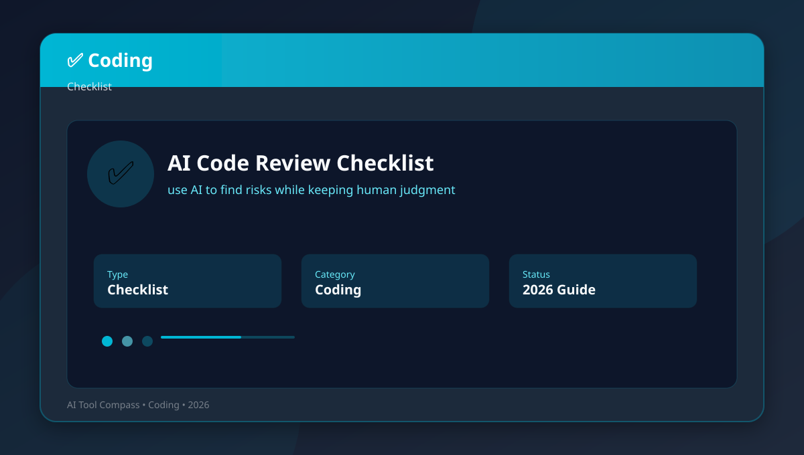
AI Code Review Checklist
Learn how to use AI to find risks while keeping human judgment with a clear workflow, examples, and beginner mistakes to avoid.
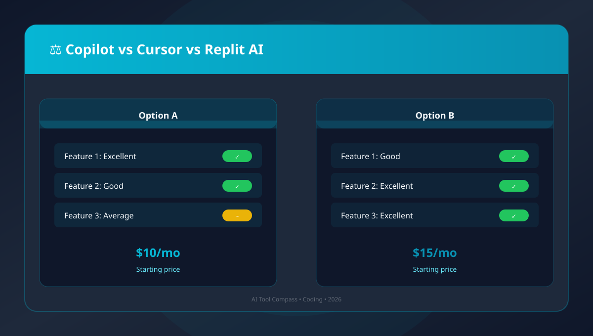
Copilot vs Cursor vs Replit AI
Learn how to compare assistant styles for different coding tasks with a clear workflow, examples, and beginner mistakes to avoid.
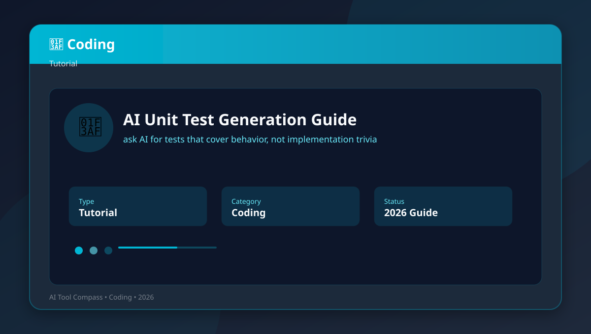
AI Unit Test Generation Guide
Learn how to ask AI for tests that cover behavior, not implementation trivia with a clear workflow, examples, and beginner mistakes to.
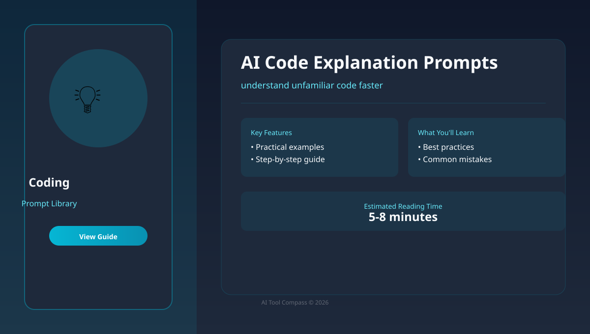
AI Code Explanation Prompts
Learn how to understand unfamiliar code faster with a clear workflow, examples, and beginner mistakes to avoid.
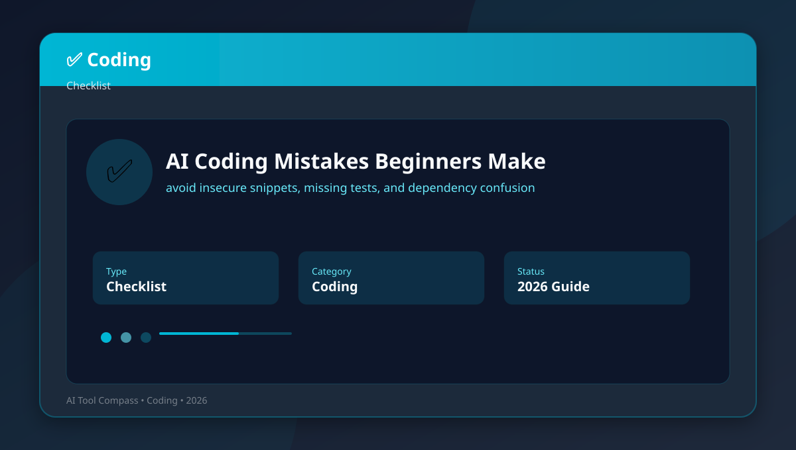
AI Coding Mistakes Beginners Make
Learn how to avoid insecure snippets, missing tests, and dependency confusion with a clear workflow, examples, and beginner mistakes to.
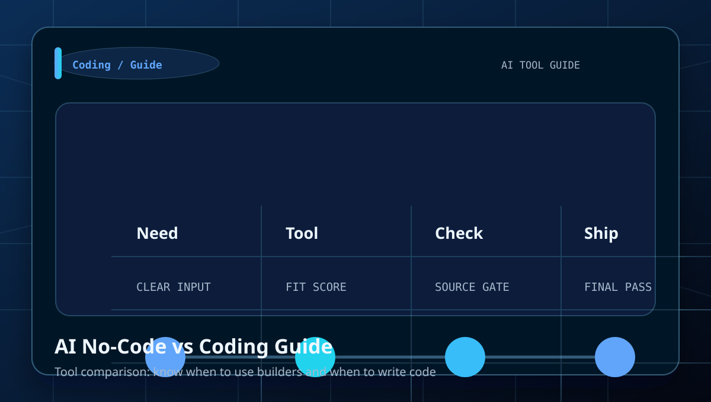
AI No-Code vs Coding Guide
Learn how to know when to use builders and when to write code with a clear workflow, examples, and beginner mistakes to avoid.
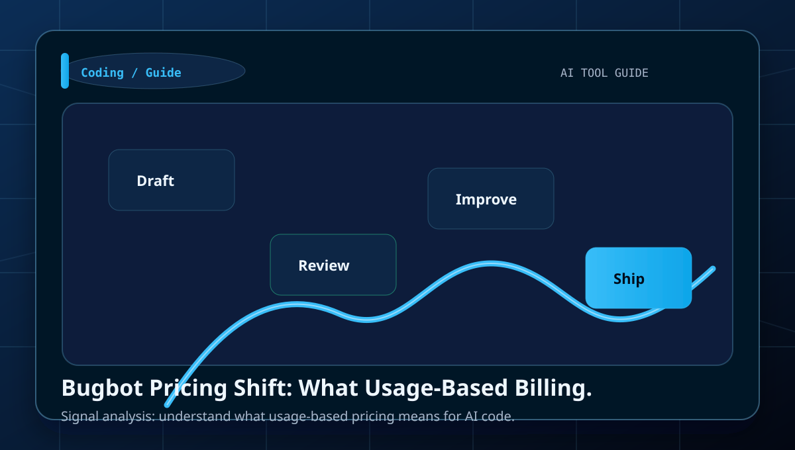
Bugbot Pricing Shift: What Usage-Based Billing Changes
Usage-based billing changes the buying decision because AI review cost now scales with workflow intensity instead of flat access alone.
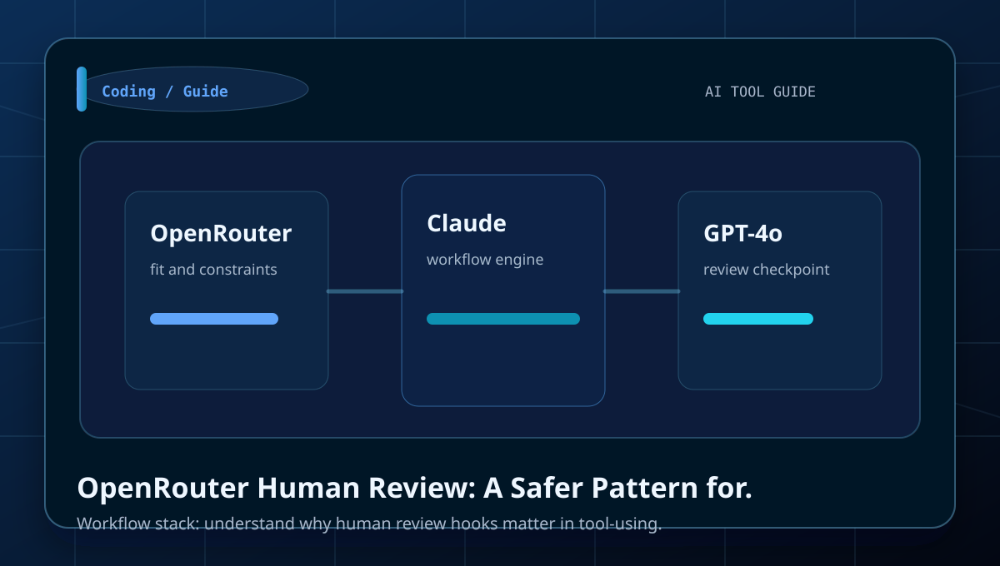
OpenRouter Human Review: A Safer Pattern for Agents
Human review hooks matter when agents can touch tools and files, but only if approval happens at the right risk points.